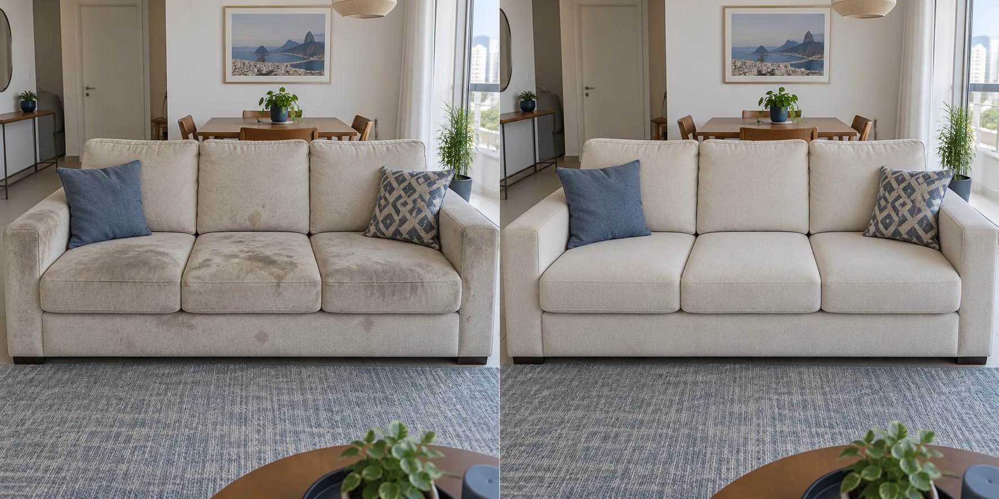
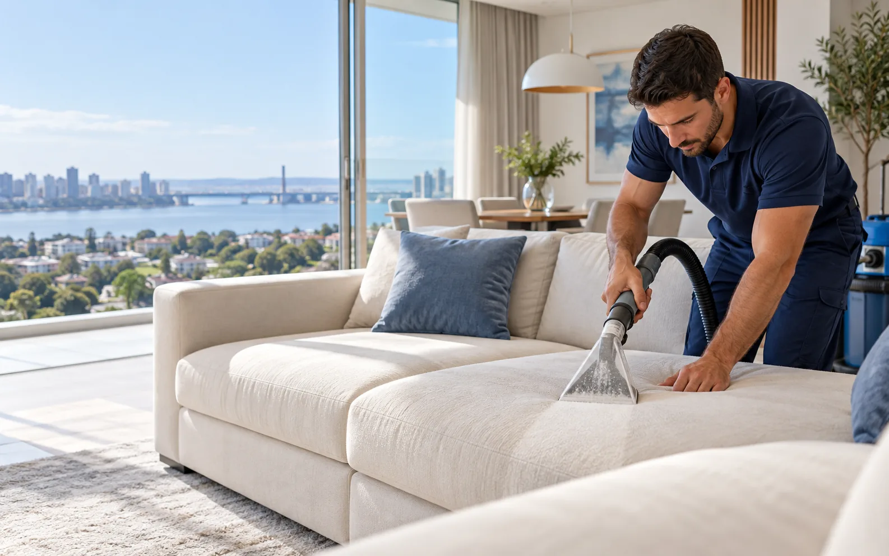
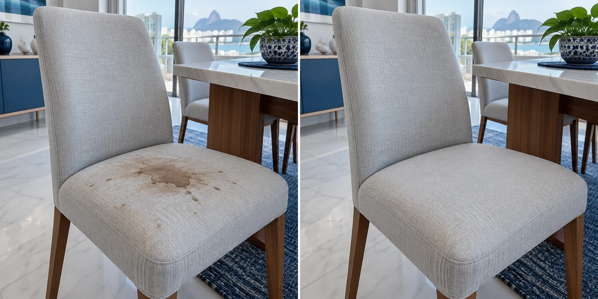
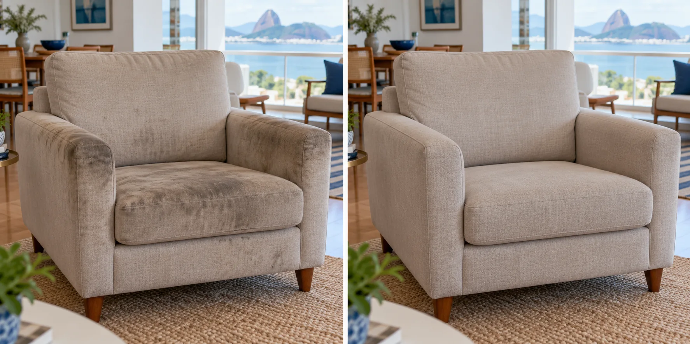
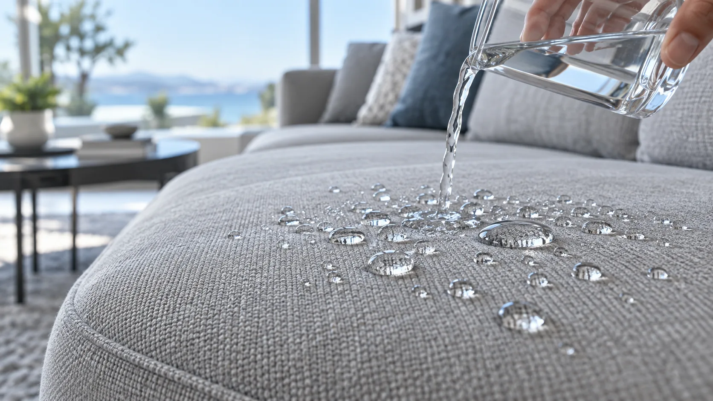
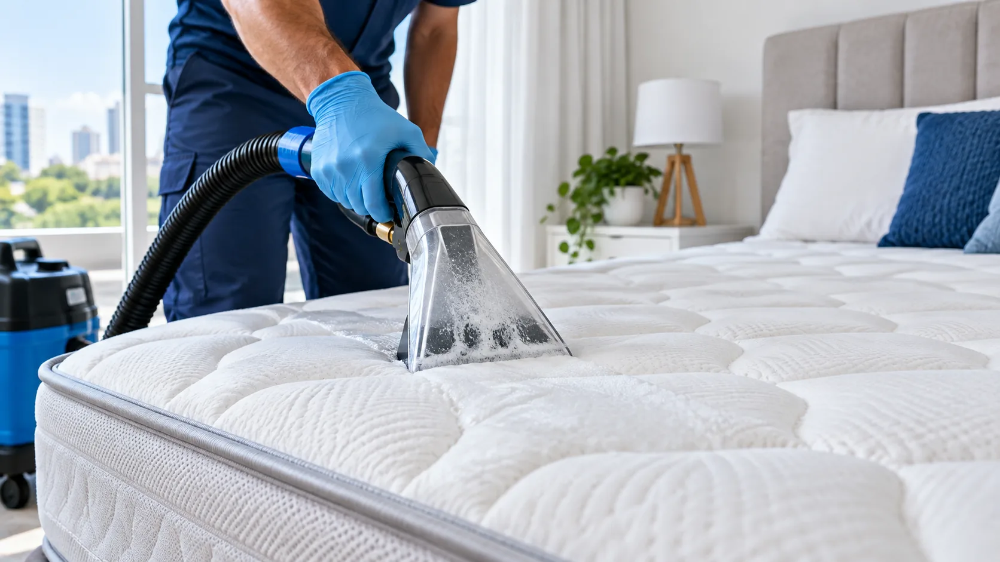
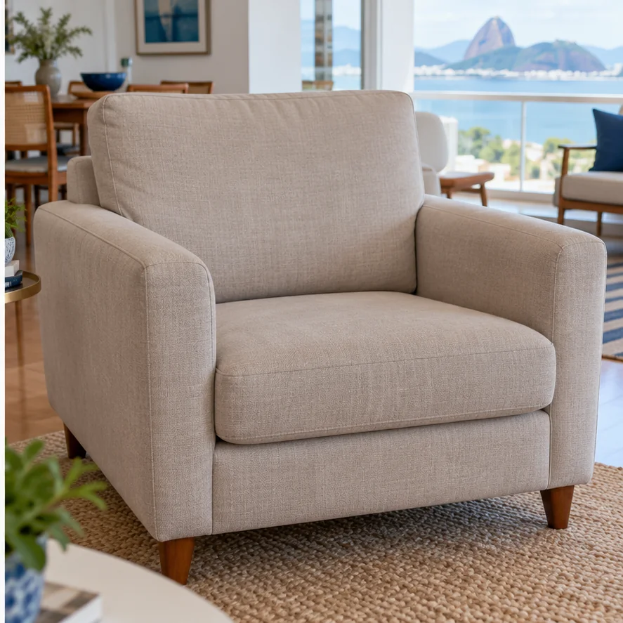
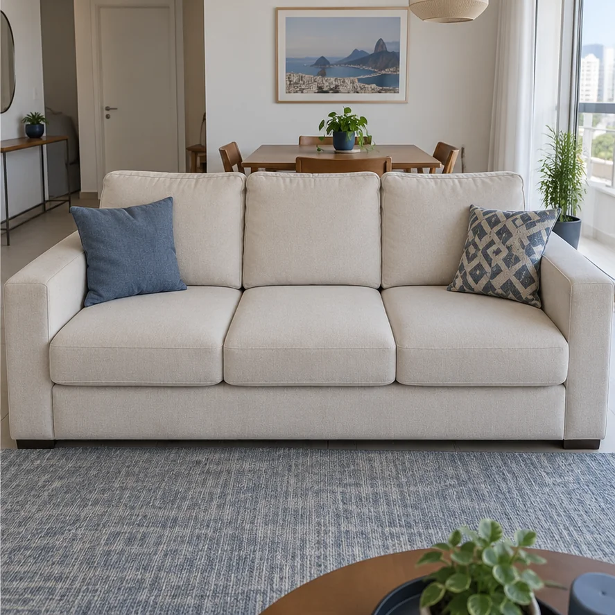

‹ ›
Imagem ilustrativaDEMONSTRAÇÃO 01
O uso aparece. O cuidado também.
Tratamento direcionado aos assentos e braços que mais acumulam sujeira.
Higienização e impermeabilização de estofados
Manchas, mau cheiro e aquele aspecto encardido? O tratamento ULTTRA CLEAN limpa profundamente, trata manchas e odores e recupera o prazer de aproveitar seu sofá.
Sofá novo? Proteja desde agora com nossa impermeabilização.
Quero cuidar do meu estofadoEnvie uma foto. Receba seu orçamento sem compromisso.

CUIDADO QUE FAZ DIFERENÇAMídia ilustrativa“Foram tratando cada parte com bastante capricho. A diferença nos braços e nos assentos me impressionou.”Depoimento fictício · prévia de apresentaçãoVeja de perto
A imagem mostra a diferença. O processo explica como chegamos até ela.

Tratamento direcionado aos assentos e braços que mais acumulam sujeira.

O tecido e a origem da mancha orientam a escolha dos procedimentos.

Cantos, encostos e braços recebem atenção até o acabamento.

Imagem ilustrativaA impermeabilização dificulta a absorção de líquidos e dá mais tempo para agir. Veja a prévia visual da proteção.
Comparações ilustrativas geradas para esta apresentação. Arraste a linha para explorar o efeito antes e depois.
Conte o que está incomodando ou o que você quer proteger. Nossa equipe orienta o serviço adequado para sua peça.
Sujeira acumulada, manchas e odores recebem o cuidado do tratamento ULTTRA CLEAN.
Cuidar do meu sofá
02Limpeza profunda para cuidar do tecido onde você descansa todos os dias.
Cuidar do meu colchão
03Assentos, braços, encostos e cantos: o cuidado aparece nos detalhes.
Cuidar das minhas peçasMais tempo para agir quando um líquido cair. Proteção para o tecido e para sua rotina.
Proteger meus estofadosMais cuidado para a sua casa, no mesmo planejamento.Também cuidamos de tapetes, cortinas e ar-condicionado.
O tecido, a origem da sujeira e os produtos já aplicados fazem diferença na escolha do tratamento.
Por isso, começamos com uma avaliação. Combinamos procedimentos e produtos específicos para cuidar da sua peça em profundidade.
Entendemos o que incomoda e identificamos as áreas que exigem atenção.
Removemos partículas soltas e tratamos manchas e odores com procedimentos e produtos específicos para cada necessidade.
Aplicação, escovação e extração trabalham juntas para desprender e remover a sujeira acumulada.
Conferimos acabamento e orientamos sobre secagem e manutenção.
Café, suco, visitas, crianças e pets fazem parte da vida. A proteção ajuda você a aproveitar esses momentos com mais tranquilidade.
Modelos de depoimentos para visualizar esta apresentação. Serão substituídos por avaliações reais.
“Eu achei que algumas marcas já não tinham mais jeito. Foram tratando cada parte com bastante capricho. A diferença nos braços e nos assentos me impressionou.”
“Trabalharam nos braços, nos cantos e nas partes que eu achei que iam passar batido. Cuidaram do sofá e deixaram o ambiente organizado.”
“Meu sofá tinha acabado de chegar e eu estava com receio de aplicar produto no tecido. Me explicaram como funcionava e deixaram todas as orientações.”
“Comecei pelo sofá e aproveitei para ver o colchão e as poltronas. Me explicaram o que cada peça precisava e os valores separados.”

Imagem ilustrativaProximidade no atendimento.
Responsabilidade em cada detalhe.
Somos Lucas e Marina. Acompanhamos o seu atendimento de perto, do orçamento às orientações depois do serviço.
Queremos entender o que você precisa e entregar um trabalho bem executado — seja para cuidar de uma cadeira, do sofá favorito ou dos estofados da casa inteira.
Itens, serviço e condições combinados antes de agendar.
Atendimento planejado e orientação sobre a secagem.
Atenção ao tecido, acabamento e organização.
Contato para esclarecer dúvidas e orientar a manutenção.
Mostre as peças, conte o que precisa e informe sua cidade.
Explicamos o serviço indicado, os valores e as condições.
Combinamos o atendimento e vamos até você.
Sem formulário longo. Sem adivinhação no orçamento.
Se preferir, conte sua situação diretamente para a nossa equipe.
Conversar pelo WhatsAppO valor depende do tamanho, modelo, tecido, estado da peça e tratamentos necessários. Envie fotos e informe sua cidade pelo WhatsApp. Você recebe um orçamento com o serviço indicado e as condições antes de agendar.
Utilizamos tratamentos específicos, mas o resultado depende da origem da mancha, do tempo no tecido e de tentativas anteriores de limpeza. Nossa equipe avalia a peça e explica o que pode ser trabalhado.
A previsão habitual é de 8 a 10 horas, podendo variar conforme o tecido, o clima e a ventilação. Orientamos como favorecer a secagem e quando voltar a utilizar a peça.
Sim. Sofás, colchões, cadeiras e poltronas são atendidos no local. Para tapetes, cortinas e outros itens, explicamos a logística indicada durante o orçamento.
É o processo de higienização da Premium Clean: avaliação, preparação, tratamento de manchas e odores, limpeza profunda, extração e acabamento. Os procedimentos e produtos são escolhidos conforme a necessidade da peça.
Sim. Conte onde aconteceu, há quanto tempo e o que já foi aplicado. A área afetada e a profundidade da contaminação entram na avaliação para indicar o tratamento.
Sim. Precisamos observar o tecido, as condições da peça e a possível presença de umidade. Informe se houve infiltração ou armazenamento em local úmido, pois a origem do problema também precisa ser considerada.
Ela dificulta a absorção de líquidos e dá mais tempo para agir. Ainda é importante remover o líquido rapidamente e seguir as orientações. A proteção não torna o tecido imune a todo tipo de mancha.
Sim, se o tecido e as condições da peça forem adequados. Quando houver sujeira acumulada, planejamos a higienização, a secagem e a aplicação na sequência apropriada.
É necessário respeitar o tempo de cura do produto. Você recebe a orientação para a sua aplicação e a liberação de uso da peça.
Durante a execução, crianças e pets devem ficar afastados da área de trabalho. Ao finalizar, explicamos os cuidados e o momento adequado para voltar a utilizar o ambiente e as peças.
Apresentamos as opções disponíveis junto com o orçamento. Valores e condições ficam combinados antes da confirmação do atendimento.
Atendemos Porto Alegre, Região Metropolitana, Capão da Canoa, Xangri-lá, Atlântida, Gramado e Canela. Para outras cidades do RS, consulte nossa programação e as condições de deslocamento.
O cuidado da Premium Clean vai até você.
Outra cidade do RS? Consulte a programação e as condições de deslocamento.
Consultar minha cidadePara cuidar da sujeira acumulada ou proteger uma peça nova, comece mostrando o que você precisa. Envie uma foto. Nossa equipe explica o serviço e prepara seu orçamento.
Quero cuidar do meu estofadoOrçamento sem compromisso. Atendimento em domicílio.